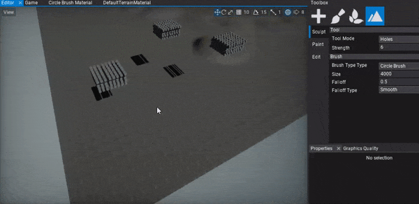

Terrain Editing

Flax supports editing terrain geometry right inside the editor. After you create or import terrain you can select it and use Landscape tab in a Toolbox window to modify the terrain. It supports 3 working modes: Sculpt, Paint and Edit.
Sculpt Mode
Terrain heightmap editing using Sculpt tool allows to create mountains, hills, valles and any other landscape shapes with a brush. This tool offers various editing modes descrided below. Select a desire tool mode, edit strength and other mode properties and edit terrain with your brush.
Sculpt
Sculpt tool mode edits terrain heightmap by moving area affected by brush up or down. Strength parameter defines the brush intensity of the applied changes to the terrain.
Note
Hold Control key to invert brush effect (eg. substract terrain height).
Smooth
Sculpt tool mode that smooths the terrain heightmap area affected by brush. Alongside the Strength parameter that defines the smoothing intensity, you can adjust the smoothing filter radius. Filter Radius property defines the size of the smoothing kernel, the higher value the more nearby samples is included into normalized sum. Scaled by the brush size.
Flatten
Sculpt tool mode that flattens the terrain heightmap area affected by brush to the target value. Use Strength parameter to define the blending intensity from the source height to target height. Target Height parameter defines the destination height for the terrain under the brush. If you use Control key it will pick the target height level at the center of the brush so it's easier to flatten the terrain to match the given area level.
Noise
Sculpt tool mode that applies the noise to the terrain heightmap area affected by brush. The noise Strength parameter defines inetsnity of the noise blending. Noise Scale can be used to adjust the noise pattern scale and Noise Amount controls the amplitude of the noise (in world units).
The current implementation uses Perlin Noise for terrain heightmap perturbation.
Holes

Terrain holes creating tool mode edits terrain holes mask by changing area affected by brush. Use it to add holes to the heightam or hold Control key to remove them.
To learn more about using holes in your terrain see this tutorial.
Brush
To learn more about using terrain brushes see the related documentation page here.
Edit Mode
Terrain heightmap editing using Edit tool allows to add or remove terrain patch and modify single terrain chunk properties. Use it to expand your terrain or remove unused terrain parts. Also, using Edit Chunk mode you can pick a single terrain chunk, view its location and override the material.
Exporting terrain
Terrain created in the editor can be exported to image files using the Export terrain mode. Once terrain selected you can use export button to select the output directory for the terrain heightmap. Exported terrain heightmap uses 16-bit PNG file format to store the heights as normalized to grayscale in range 0-1.